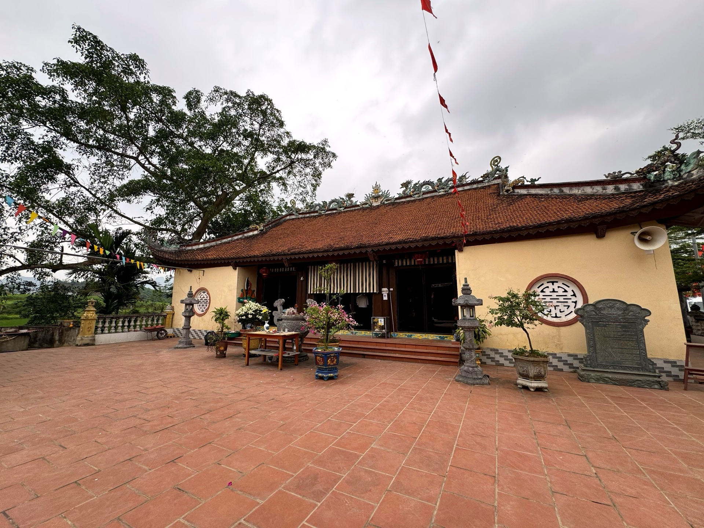
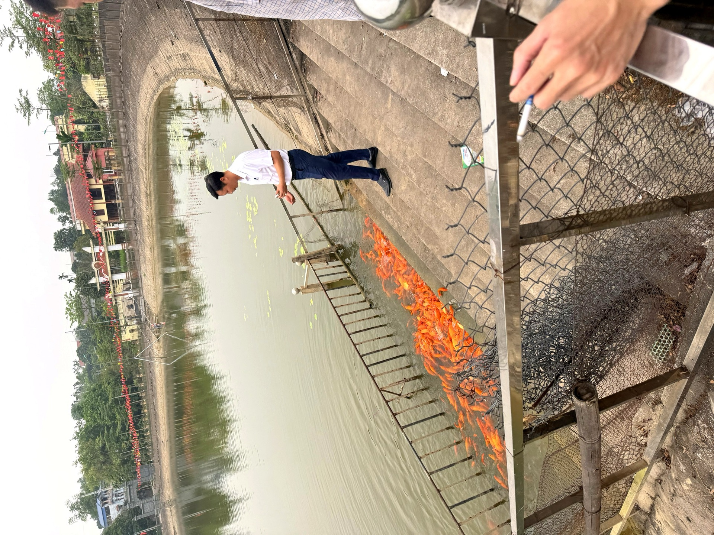

Loại hìnhTypeType
Di tích lịch sửHistorical siteSite historique

Đình Phú Cốc là đại đình chung của các thôn người Mường trong vùng Phú Cốc, thờ Nhị vị Thành Hoàng làng Từ Quang – Từ Minh, gắn liền với Nhị vị Thánh Mẫu được tôn thờ tại Đền Cây Thợi. Đây là trung tâm tín ngưỡng và sinh hoạt cộng đồng qua nhiều thế hệ — nơi diễn ra các nghi lễ thờ thần, kỳ họp cộng đồng và các sinh hoạt văn hóa của người Mường địa phương.
Công trình hiện nay được dựng lại năm 2010 theo phong cách bê tông kiểu cổ, lưu giữ các câu đối cổ mang giá trị văn chương và lịch sử. Đình gắn kết chặt chẽ với đời sống tinh thần của cộng đồng, là nơi người dân gửi gắm mong cầu mưa thuận gió hòa, bình an và thịnh vượng.
Dinh Phu Coc is the communal house for the Muong villages in the Phu Coc region, dedicated to the two village tutelary spirits, Tu Quang and Tu Minh, and connected to the two Holy Mothers worshipped at Den Cay Thoi. For generations, it has been a vibrant center of faith and community life, hosting sacred rituals, community gatherings, and cultural activities of the local Muong people.
The current structure, rebuilt in 2010 in an ancient concrete style, preserves antique couplets of literary and historical value. The Đình is closely intertwined with the community's spiritual life, a place where locals offer prayers for favorable weather, peace, and prosperity.
Le Dinh Phu Coc est la maison communale des villages Muong de la région de Phu Coc, dédiée aux deux esprits tutélaires du village, Tu Quang et Tu Minh, et liée aux deux Saintes Mères vénérées au Den Cay Thoi. Depuis des générations, c'est un centre dynamique de foi et de vie communautaire, accueillant des rituels sacrés, des rassemblements communautaires et des activités culturelles du peuple Muong local.
La structure actuelle, reconstruite en 2010 dans un style béton ancien, préserve des couplets antiques de valeur littéraire et historique. Le Đình est étroitement lié à la vie spirituelle de la communauté, un lieu où les habitants prient pour une météo favorable, la paix et la prospérité.
| Tham quan, chiêm báiVisit and offer prayers.Visite et recueillement. | Vãng cảnh đình, dâng hương Thành Hoàng làngVisit the communal house and offer incense to the revered Village Guardian Deity.Visitez la maison communale et offrez de l'encens au vénéré Génie tutélaire du village. |
| Hướng dẫn tại chỗLocal GuidesGuides Locaux | Giới thiệu lịch sử đình, ý nghĩa các câu đối cổLearn about the pagoda's history and the meaning of ancient couplets.Découvrez l'histoire de la pagode et la signification des anciens distiques. |
| Tìm hiểu văn hóa MườngExplore Muong cultureExplorez la culture Muong | Nghe kể về tín ngưỡng Thành Hoàng và đời sống cộng đồngListen to stories about the Thành Hoàng deity and community life.Écoutez des récits sur la divinité Thành Hoàng et la vie communautaire. |
| Chụp ảnh kiến trúcCapture ArchitectureImmortalisez l'architecture | Công trình đình kiểu cổ và không gian sân đìnhAncient-style pagoda architecture and courtyard.Architecture de pagode de style ancien et cour. |
| Tham dự lễ hội cộng đồngJoin vibrant community festivalsParticipez aux festivals communautaires animés | Theo lịch lễ hội của địa phương (liên hệ trước)According to the local festival calendar (contact in advance).Selon le calendrier des fêtes locales (contactez à l'avance). |


Đình Phú Cốc hướng tới trở thành điểm trải nghiệm văn hóa cộng đồng người Mường đặc sắc, kết hợp với Đền Cây Thợi và Chùa Phú Cốc thành cụm di tích tâm linh vùng Phú Cốc. Giai đoạn tiếp theo sẽ tập trung phiên âm và diễn giải các câu đối cổ, xây dựng tư liệu lịch sử về vai trò đình làng trong đời sống người Mường, và kết nối với chương trình giáo dục di sản địa phương. Điểm đến Du lịch cộng đồng Mường Cốc, Xã Mỹ Đức – Thành phố Hà NộiĐình Phú Cốc aims to become a distinctive Mường community cultural experience site, combining with Đền Cây Thợi and Chùa Phú Cốc to form a spiritual relic cluster in the Phú Cốc region. The next phase will focus on transcribing and interpreting ancient couplets, developing historical documentation on the role of the communal house in Mường life, and connecting with local heritage education programs. A Mường Cốc Community Tourism Destination, My Duc Commune – Hanoi City.Đình Phú Cốc vise à devenir un site d'expérience culturelle communautaire Mường distinctif, se combinant avec Đền Cây Thợi et Chùa Phú Cốc pour former un complexe de vestiges spirituels dans la région de Phú Cốc. La prochaine phase se concentrera sur la transcription et l'interprétation des anciens couplets, l'élaboration de documents historiques sur le rôle de la maison communale dans la vie Mường, et la connexion avec les programmes d'éducation au patrimoine local. Une destination de tourisme communautaire de Mường Cốc, commune de My Duc – ville de Hanoi.